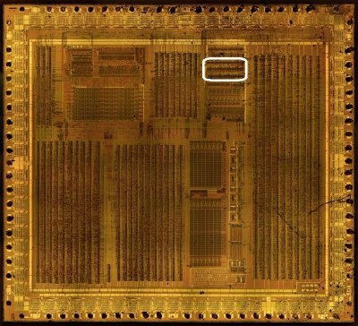
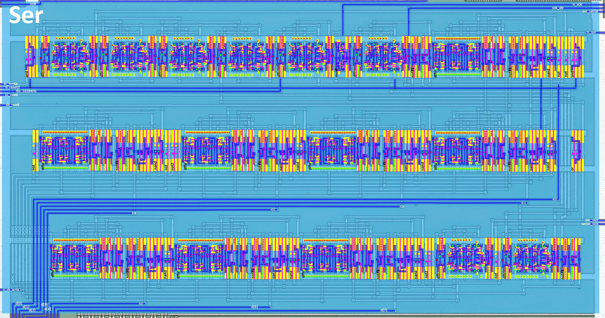
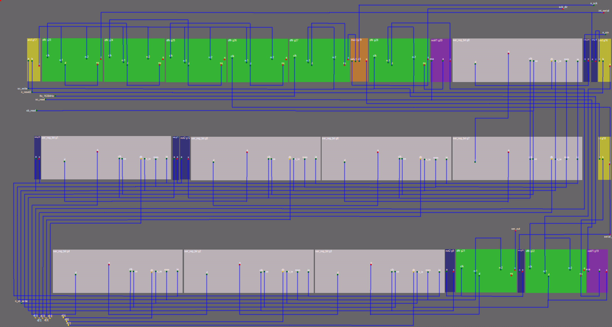
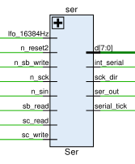
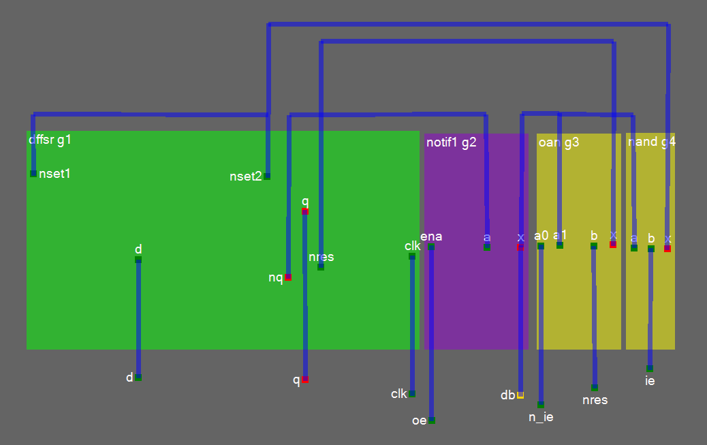

Serial Link
We need to verify this module somehow. After verification, there will be more confidence that everything is good here. But in general the section looks ok.
Serial Link is split between Ser and APU: a large chunk is located in the APU, because it is closer to the pads (the APU also houses the debug register TEST_PAD, $FF60). Ser contains the core logic of the interface itself.
What Ser does:
- Transfers serial data in both directions via the 8-bit shift register formed by
ser_reg_bitcells - Synchronizes the transfer with the external clock (
n_sck) or the internal low-frequency oscillator (lfo_16384Hz) - Generates the
int_serialinterrupt on transfer completion



Signals

| Signal | Dir | From/Where To | Description |
|---|---|---|---|
| sc_write | Input | From MMIO | Signal to enable serial control write operations |
| n_reset2 | Input | From ClkGen | Active-low Global reset signal |
| lfo_16384Hz | Input | From MMIO | Low-frequency oscillator clock signal (16384 Hz); Can be switched to fast mode (1 MHz) by debugging register TEST_PAD |
| sc_read | Input | From MMIO | Signal to enable serial control read operations |
| sb_read | Input | From MMIO | Signal to enable serial buffer read operations |
| n_sb_write | Input | From MMIO | Active-low signal to enable writing to the serial buffer |
| [7:0] d | Bidir | Global | Bidirectional internal data bus |
| n_sck | Input | From Pad | Serial clock input for synchronization |
| sck_dir | Output | To APU | Signal indicating the direction of the serial clock |
| int_serial | Output | To MMIO | Interrupt signal for serial communication events |
| n_sin | Input | From Pad | Serial input data line |
| ser_out | Output | To APU | Serial output data line |
| serial_tick | Output | To APU | Signal indicating a serial clock tick |
Key Functionality
- Shift register: eight
ser_reg_bitinstances (g1..g8) form the 8-bit shift register. Data is shifted in/out onw6/w8; the shift register connects to the data busd[7:0]for reading/writing. - Clock:
w5..w8are derived fromn_sckandlfo_16384Hz;serial_tickmarks the clock ticks of the transfer. - Interrupt:
int_serialis generated through flip-flopsg23..g26. - Direction:
sck_dircontrols the direction of the serial clock; a mux (g29) selects between the internal oscillator and the external clock.
Signal Flow
- Input:
n_sin-> shift register (g1..g8); the value appears ond[7:0]whensb_readis active. - Output: on
n_sb_writethe shift register is loaded fromd[7:0]and shifts the data out onser_out. - Clock:
w5..w8are generated fromn_sck/lfo_16384Hz;serial_tick(w17) synchronizes the transfer. - Interrupt: transfer completion raises
int_serial, stabilized by flip-flopsg23..g26.
Verified behaviour (issue #396, tb_ser all-PASS)
Real Ser netlist + real MMIO decode in HDL/soc/icarus/soc (merged
netlist ser_merged.v, WSL-native Icarus):
-
SC register ($FF02) decode: MMIO generates
sc_write; Ser stores the control bits itself:sck_dir(= SC bit0) selects the shift clock source - 1 = internal clock (master), 0 = externaln_sck. SC bit7 = transfer start. -
Transfer: with SC = 0x81 (start + internal clock) the transfer runs for exactly 8
serial_tickpulses; SB shifts out onser_outand shifts in fromn_sin(LSB-first). The SC start bit self-clears when the transfer completes. -
Interrupt: on completion
int_serialrises; MMIO IF bit3 (cpu_irq_trig[3]) is set; it is cleared by the CPU interrupt acknowledge. -
SB ($FF01): the write path (
n_sb_write) loads the shift register (through the per-cell set/reset path described below); read-back of an arbitrary loaded value currently shows only bus-bit0 under the plain bus model (read-back polarity/order question - the loaded value is proven by the shift result 0xFF after 8 idle-high ticks). -
Serial tick rate with the internal source: the
lfo_16384Hzfrom MMIO is divided further inside Ser (transfer of 8 bits takes ~4 lfo cycles in the tb_ser window - exact divider taps under analysis).
The cell chain structure (from the netlist): cells g8..g1 form the
shift register (g8.q -> g7.d -> ... -> g1.d); the q outputs also feed
the bus interface cells whose db pins are wired to the d-bus bits
(g1..g8.db -> d[4]/d[6]/d[7]/d[5]/d[3]/d[2]/d[1]/d[0]).
ser_reg_bit

| Port | Dir | Description |
|---|---|---|
| d | input | Used to load the previous value to form a shift register |
| q | output | Used to output the current value to form a shift register. The nq output inside the circuit is used to output the value to the databus |
| clk | input | Clock |
| oe | input | Output Enable |
| db | bidir | databus |
| ie + n_ie | input | Complementary Input Enable |
| nres | input | Global reset signal (n_reset2 is used) |
Implements a single-bit serial register with buffering and control logic. The circuit contains 8-bit shift register based on these elements.
Loading the value from the bus is done in the following way: we cannot use direct feeding, because the d input is used to form a chain from the previous bit. Therefore, using the complementary Input Enable and /set and /res inputs of DFFSR - the register is set to the desired value.
Map
| Row | Cells |
|---|---|
| 1 | and, dffr, dffr, dffr, dffr, dffr, muxi, dffr, notif1, {dffsr, notif1, oan, nand}(ser_reg_bit), not, not, and |
| 2 | not, {dffsr, notif1, oan, nand}(ser_reg_bit), not, not2, {dffsr, notif1, oan, nand}(ser_reg_bit), {dffsr, notif1, oan, nand}(ser_reg_bit), {dffsr, notif1, oan, nand}(ser_reg_bit), or |
| 3 | {dffsr, notif1, oan, nand}(ser_reg_bit), {dffsr, notif1, oan, nand}(ser_reg_bit), {dffsr, notif1, oan, nand}(ser_reg_bit), not2, dffr, not, dffr, notif1 |